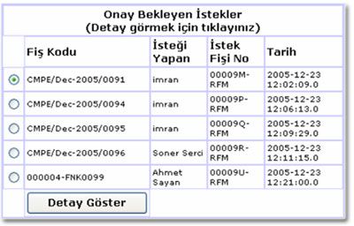

Bölümlerde doldurulan istek fiþleri bu sayfaya yönlendirilir.
Sekreter sisteme girince karþýsýna onay bekleyen istek fiþleri doldurulma tarihlerine göre sýralanýr. Sekreter ayrýntýlarýný görmek istediði istek fiþini seçer ve "Detay göster" tuþuna basar ve yeni bir sayfaya yönlendirilir.

Açýlan sayfada istek fiþinin özelliklerinin yaný sýra seçilebilecek uygun
bütçelerin "Fonksiyonel Kurumsal Kodlarý" ve Mevcut Tutarlarý
görüntülenmektedir. Bölüm sekreteri bu sayfa aracýlýðý ile ilgili istek
fiþine uygun bütçeyi seçer. Eðer varitabanýnda seçilen Anakalem ile ilgili
Fonksiyonel ve Kurumsal kodlar mevcut deðil ise hiçbir seçim iþlemi gercekleþtirilemez
ve "Sistemde Seçili AnaKalem ile ilgili Fonksiyonel ve Ekonomik Kodlar
bulunmamaktadýr!" uyarýsý gösterilir. Bu durumda Onaylama iþlemi
gerçekleþtirilemez.
Uygun kodlar bulunmasý halinde sekreter aþaðýdaki 3 iþlemi gerçekleþtþrebilir:
Onayla
Sekreterin onayladýðý istek fiþi ilgili bölümün "Bölüm Baþkaný"nýn
sayfasýna yönlendirilir.
Reddet
Sekreterin reddettiði fiþler sistemden silinir.
Tarihçe göster
Sekreter istek fiþinin geçmiþini inceleyip kararýný bu doðrultuda verebilir.
Sekreter ekranýn solundaki menude bulunan aþaðýdaki iþlemleri de gerçekleþtirebilir.
ÝstekTakip
Sekreter durumunu öðrenmek istediði istek fiþinin kodunu girerek ayrýntýlarýný
öðrenebilir.
Yeni istek fiþi
Sekreter buradan kendisi için istek fiþi girebilir. Bu iþlemin ayrýntýlarý
için "Ýstek Fiþi" bölümüne bakýnýz.
Ana Menü
Ana menüye dönmek için kullanýlýr.
Þifre deðiþtir
Kullanýcý þifresi deðiþtirmek için kullanýlýr. Bu iþlemin ayrýntýlarý
için "Þifre deðiþtirme" bölümüne bakýnýz.
Sistemden Çýkýþ
Sistemden çýkmak için kullanýlýr.